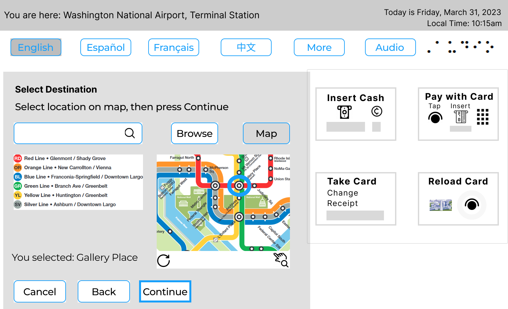

Experience
My research interests include user experience design and socio-technical systems. User experience design looks at design characteristics that result in poor user performance with a system or product and tries to improve a user’s experience with that system or product by researching user behavior—their wants, needs, and frustrations.
For example, have you ever gone to open a door and you pushed rather than pulled it open or vis versa?
What characteristics of that door made you think it was push to open instead of pull?
Similarly, on a website, have you ever spent a lot of time looking for something but just couldn’t find it?
These examples highlight how intuitive a product or system is, how information is laid out for discovery or navigation, and how frustrating or enjoyable it can be for the user. Researching how to design systems with a human-centered focus can impact the end user’s experience and their ultimate use of that system or product. Understanding how to create and design for the totality of those matters is something I research and design because it affects people around the world.
Check out samples of my work by scrolling or using the categories on the left.
Research and Writing
Over 25 peer-reviewed publications with 110+ citations on UX, inclusive design, scholarly communication, digital publishing, socio-technical systems, and digital research methods.
Artifact 1—Book Chapter
(In press) Inclusive Design: A Method and Craft of Transforming DH with UX,” In Digital Humanities in the Library: Challenges and Opportunities for Subject Specialists, Revised Second Edition, Eds. Arianne Hartsell-Gundy, Laura Braunstein, and Liorah Golomb. Association of College & Research Libraries. (INSERT PDF LINK)
Project design in user experience and digital humanities share many of the same motivating questions. When setting up surveys as part of your research, do you consider the language or purpose of the question? Are there leading questions? Have you considered the background or demographics of your audience? When setting up tasks for user testing a research project, do you strategize how to recruit users with a diverse approach or just try to get as many as possible? These are just a few of the questions user experience (UX) professionals would consider when creating a digital project. These questions should also be asked by the creators of digital humanities (DH) projects.
This chapter provides an introduction of the problem and definitions of the UX field, an overview of the user-centered design phases and its applications, an overview of UX research and design phases and the importance of applying UX to DH. Then the chapter concludes with an inclusive design checklist that can help root the UX process in digital projects, regardless of the role of the subject specialist or reader of the book. This chapter is neither comprehensive nor definitive but intended to be helpful to those who are new to UX and inclusive design of digital projects.
In retrospect, I would have liked to add a workflow, for a visual representation of the different phases of UX design. However, this would have increased the length of the book chapter, which is problematic for most publishers that have firm text length requirements. Publishing as a journal article would have also provided more immediate access as book publishing timelines are generally a lot longer than open access journals. In my field, waiting two years for publication is long enough to make the information obsolete.
Artifact 2—UX Research Brief
(2023). UX Brief on Space Planning
Academic libraries regularly need to re-evaluate services and spaces to accommodate for the growing and changing user populations. Library users have varying preferences and needs when it comes to library space usage, including but not limited to solo workspace, group workspace, noise level preferences, seating comfort preferences, and service options.
The study utilized a qualitative mixed-methods approach to discover the user perception of “spot” selection in an academic library by interviewing ten library users. Users were selected across all four floors, and in different sections of the library in November 2022. The results suggest metrics for assessing and designing library spaces.
In retrospect, interviewing another set of users at a different time period (e.g. evening or weekend) or a different semester (e.g. spring or summer), would have given an additional perspective. As an experiment, I had users draw maps of their library knowledge during the interviews, a type of journey mapping based on memory. This process had intended to correlate knowledge and memory but there was insufficient time for detailed analysis and deliverable goals. This is something I would have changed, either exclude the journey mapping or allow sufficient time to see it through. The results suggest metrics for assessing and designing library spaces.
Teaching
I have formal and informal teaching experience, as well as program management and administration experience in higher education.
Artifact 3—Graduate Courses (Formal Teaching)
For three years, I taught graduate courses an instructor in the College of Communication and Information at Kent State University. My students came from programs including information, digital sciences, journalism, visual communication, and UX design. Overall, my courses largely focused on information technologies and modern theories and techniques for information design, storage, dissemination, preservation, and retrieval.
- Information Technology for Information Professionals (2 sections)
Introduction to information technology concepts: computer hardware and software basics, operating systems, information systems evaluation, HTML, web apps, emerging technologies, and digital platforms. - Information Organization (7 sections)
Theory and practice of information organization and retrieval in various information environments, including knowledge organization, metadata, information management, data ethics, human computer interaction.
In retrospect, I would have liked to add an assignment of using A/B testing. Giving students an opportunity to compare two different site layouts of the same type of system (a catalog, website, or repository). For example, a website with good information organization and another with poor organization. The assignment objectives would help students identity theories, behaviors, and interactions needed to use the system, while also helping them understanding one method of evaluating a product (the A/B testing process).
Artifact 4—Mentorship (Informal Teaching)
I teach workshops and guest lectures on digital humanities, web apps, project design, digital publishing, and UX/UI design. I try to incorporate research elements where students can apply skills learned and have products that may be suited for their goals: a piece for their portfolio, a paper or product to present at conferences, or a digital design experience that helps prepare them for job applications or graduate school admissions. I use the products I have created for professional practice or in my own graduate coursework as examples (reminder app, web form, 10-foot streaming interface, repository app) for students seeking consultation on design ideas where I emphasize experimentation, practicality, and design thinking. For some students, this is a motivating factor to switch majors/minors into experience design or is the missing gap in their curriculum that helps meet career goals.
One of my graduate students created a help guide on the topic of wellness (emotional, financial, mental, physical, etc.). As the student’s mentor, I guided her learning process of this topic through inclusive design practices. This included the topics of research, empathy, accessibility, and information architecture (navigation and discovery). Once the research layers were complete, I set up the infrastructure for the transfer of her research into a web-based guide that is now available for public use. View the Wellness Guide.
In retrospect, this project took a little longer than desired. I would have liked to provide a more detailed timeline for the student to adhere to rather than a loose deadline. Although we had various projects throughout the year, I could have emphasized a higher priority or allocated more research or design time in order to speed up the project completion.
Systems Development
As a professor and program manager, I oversee a research unit at R2 research institution that uses various technologies for publishing and preservation. I plan, budget, and manage full cycle / end-to-end design work and research projects and administer various platforms, repositories, digital asset management systems, and content management systems.
Artifact 5—Ticket Kiosk
(2023). Human Computer Interaction and Inclusive Design Implications for Ticket Kiosks: A Pilot Study of Task Analysis and Usability. (INSERT PDF)
The current ticket kiosks used in a U.S.-based metro transportation system is out of date and confusing for infrequent travelers to that area. Research and design solutions have been developed to overcome the existing challenges after the initial user research phase. This study also involved the evaluation of a ticket kiosk’s user interface using screeners to recruit 3-12 participants who have previously purchased tickets via an interface, and the use of scenarios and tasks to identify usability and design issues. Iterative testing and design included two testing feedback sessions as part of the pilot study. The use of Figma for interactive prototypes are also used to track first-clicks and task completion. With a design thinking approach and use of a think aloud protocol, iterative designs and evaluation were conducted with a particular focus on inclusive design aspects.
The hierarchical task analysis diagram was improved upon with wireframes for the proposed kiosk. A wireframe typically focuses on the functionality and physical layout of the design, without color or graphics. The wireframes are based on pain points discovered in user research and the literature review. Iterating on wireframe drafts led to the creation of a prototype based on the wireframes. The wireframes and prototypes were created based on a specific scenario and tasks: Infrequent passengers traveling via the metro in Washington, D.C.
- Task 1
Buying a Metro farecard at the Washington National Airport (DCA) to arrive at a specific destination (Gallery Place). - Task 2
Buying a Metro farecard with a specific dollar value purchased.
Low fidelity prototypes (paper wireframes) were drafted and iterated on before higher fidelity prototypes (digital simulation) were put to the test with users to evaluate the functional needs of users and effectiveness of the system design.
In addition to the slew of wireframaes, there is an interactive prototype available via Figma. Both the interactive prototype and the annotated mockup show other options in the UI, such as adding value to an existing farecard or purchasing a pass, however, the wireframes and prototypes were solely designed for infrequent passengers per the parameters of the pilot study. It is possible future studies could involve wider design implications for the other purchase options, such as, iterating between challenging assumptions (ideate) with language barriers and the solution for it (protoype).
Looking at inclusive design implications for a ticket kiosk can help relieve anxiety of infrequent travelers in an unfamiliar area. Additionally, because of the universality of the design, the kiosks will also benefit frequent users as initial results of user testing indicate. This pilot study focused on user research and inclusive design aspects to improve current designs in use and future research is needed, especially with more user testing sessions. The inclusive design features included user preferences for language selection options (at any time of purchase process), search/navigation preferences (browse by list, browse by map, search by typing), payment options, and notifications of actions selected. These features give users control and flexibility.
In retrospect, although this pilot study specifically looked at the design and usability of ticket kiosks, the iterative design and inclusive design recommendations are broadly applicable for other uses. For example, the same accessible and inclusive design process can be beneficial to ticket kiosks at airports, used in a lobby for reserving concert tickets, paying parking fees, or tickets for entrance to museums, amusement parks, utility bill payments, hospital or medical payments, gym memberships, and more. Additionally, I would have liked to add interactions to the prototype for the language options, switching between languages as those buttons are pressed. For now, the idea is presented with the initial draft design.
Service and Participation
Professional Service
- Member, Editorial Curriculum Board, Library Publishing Coalition (LPC), 2023-2025
- Rotating Chair, Member, Diversity, Equity, and Inclusion Committee, (LPC), 2021-2023
- Member, Strategic Planning Team, Library, Middle Tennessee State University, 2021-Present
- Member, Community Engagement and Outreach Committee, Middle Tennessee State University, 2022-Present
- Member, CEOC's Campus Workforce SubCommittee, Middle Tennessee State Uniersity, 2022-Present
- Memeber, Library Leadership Team, Middle Tennessee State University, 2021-2023
- Institutional Representative, Coalition for Networked Information (CNI) 2021-Present
- Institutional Representative and voting member, LPC, 2021-Present
- Section Editor, Open Library of Humanities Journal, Ubiquity Press, 2014-Present
- Invited Peer Reviewer, Digital Library Perspectives, 2020, 2021
- Peer Reviewer, Library Leadership and Management, 2017-Present
- Invited Peer Reviewer, Journal of Web Librarianship, 2017
- Peer Reviewer, Digital Humanities Quarterly, 2014-Present
- Editor-At-Large, ACRL’s DH + Lib Review, 2014-2016
Professional Participation (Select)
- Attendee, Digital Humanities Summer Institute 2022, 2023
- Attendee, Search Advocate Foundations, Oregon State University, June 2022
- Attendee, Coalition for Networked Information, Annual Meetings 2021, 2022, 2023
- Attendee, Library Publishing Coalition (LPC) Forum Annual Conference, 2021, 2022, 2023
- Planning Team and Attendee, Anti-Racism Community Call, LPC, 2021
- Attendee, Designing for Digital Annual Conference, 2020, 2021